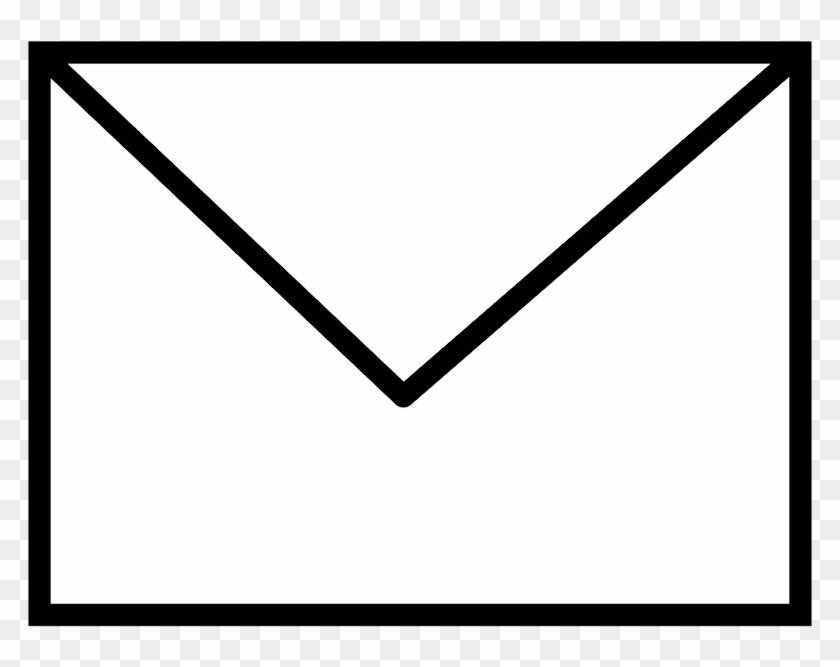

As long as your grant passes some initial checks to get reviewed, it is very typical for you to receive comments or grades back from the actual people who reviewed your content. Now seeing these comments can make you feel some type of way, but the feedback is generally quite useful. Grants are highly competitive but many of them allow you to apply more than once. Thus it can be very helpful to go through your reviewer comments very seriously to look for definite areas to improve on your next application. In fact in some applications, there is a specific prompt for you to complete if it is a resubmission and you must make your case showing where you improved from the previous application.
Easy improvements
